Chapter 6: Signoff & Tapeout¶
Signoff is the final exam before a chip is manufactured: dozens of independent checks confirm that timing, power, electrical reliability and the physical layout are all correct and manufacturable. Only when every check is clean, or every exception is reviewed and waived, does the team 'tape out' and send the layout to the foundry. This chapter covers signoff timing, parasitic extraction, power and IR/EM analysis, physical verification (DRC, LVS and friends), DFM, the final GDSII/OASIS database, mask sets and shuttles, late metal-only ECOs, and reliability.
6.1 What Signoff Means¶
Signoff means formally confirming that a design meets every requirement for manufacturing and operation, using 'golden' tools trusted by the foundry and the company. Implementation tools estimate; signoff tools measure as accurately as possible. Each category (timing, power, physical verification, equivalence, DFT, low power) has an owner who signs off, often with a checklist and review meeting.
Think of it like…
Signoff is like the final inspection before a plane is allowed to fly: independent inspectors check every system with certified instruments, and every item must be signed.
Real-world example
Two weeks before tapeout of a Bluetooth SoC, the signoff review lists: STA clean in 24 scenarios, IR drop under 5 %, EM clean, DRC and LVS clean with 3 approved waivers, LEC equivalent, ATPG coverage 99.1 %, UPF checks clean, ERC and ESD clean. The chief engineer reviews each item, the foundry checks the waivers, and the team gets the green light.
How it works¶
- Freeze the netlist and layout candidates for signoff.
- Run golden signoff tools: STA, extraction, power/IR/EM, DRC/LVS, LEC, low-power, DFT checks.
- Triage violations; fix with ECOs or review and waive with justification.
- Hold signoff reviews; record results in a tapeout checklist.
- Get final approvals from internal leads and the foundry.
Who uses it
Signoff engineers (STA, physical verification, power integrity), project leads and foundry customer engineers.
Key takeaway
'Golden tool' means the tool whose results the foundry and company trust for final decisions, usually certified by the foundry.
Going deeper
- Signoff is a matrix, not one run: every category × every mode/corner × every hierarchy level, tracked with owners and dates on a dashboard until all cells are green.
- Implementation tools use estimated parasitics and fast timers; signoff tools use full extraction and the most accurate models, so a correlation gap of a few picoseconds is normal and monitored.
- Waivers must be specific (rule, location, reason, approver) and re-validated after every database change; blanket waivers are a classic tapeout risk.
- A typical final week: database freeze, full signoff runs on frozen data, review meetings, then data packaging and upload; any late ECO restarts the affected checks.
- Scenario counts at advanced nodes reach dozens to hundreds; dominance analysis keeps daily runs affordable, but the final signoff covers the full list.
Common mistakes & misconceptions
- Treating 'clean in the P&R tool' as signoff; only golden-tool results on the final merged database count.
- Copying waivers from a previous tapeout without fresh review against the current rules and layout.
- Running final checks on a different database version from the one shipped; always tag and checksum the data.
Key concepts, tools, formats, standards & companies¶
| Name | What it does | Example |
|---|---|---|
| Signoff Industry term · Concept · Signoff |
Final formal verification that a design meets all functional, timing, power and manufacturing requirements. | Timing signoff means PrimeTime or Tempus shows zero violations in all required scenarios. |
| Golden signoff tools Industry term · Concept · Signoff |
Trusted, foundry-certified tools whose results are accepted for tapeout decisions. | Calibre is the golden DRC/LVS tool at many foundries. |
| Correlation Flow quality metric · Concept · Signoff |
How closely implementation-tool estimates match signoff-tool results. | Good correlation means P&R slack is within a few ps of signoff slack. |
| Waiver review Signoff practice · Methodology · Signoff |
Formal review of each remaining violation deemed safe, documented and approved. | A DRC density waiver in a test structure is approved by the foundry. |
| Signoff checklist Company/foundry practice · Concept · Signoff |
List of every check that must pass before tapeout, with owner and status. | The checklist has 150 items from 'LVS clean' to 'pad ring reviewed'. |
| Foundry tapeout review Foundries · Concept · Signoff |
The foundry's own checks of the submitted data before making masks. | The foundry rejects a database because the seal ring is missing. |
| Signoff compute infrastructure Company IT / cloud · Concept · Signoff |
Large servers and clusters needed to run full-chip signoff jobs. | Full-chip DRC runs on 1,000 cores in the cloud overnight. |
| Multi-scenario signoff Signoff practice · Methodology · Signoff |
Running every required mode, corner and condition combination before tapeout. | STA covers 6 modes × 8 corners = 48 scenarios. |
| RTL-to-GDS consistency checks Signoff practice · Methodology · Signoff |
Confirming that the final layout corresponds to the verified RTL (LEC, LVS, netlist version checks). | A script confirms the GDS, netlist and RTL all carry the same release tag. |
| Tapeout readiness review Company practice · Methodology · Signoff |
Formal meeting where each signoff owner presents results and open risks before leadership approves tapeout. | The review walks through 24 categories and assigns two open items before final approval. |
| Database freeze Signoff practice · Concept · Signoff |
Point after which the netlist and layout may change only through approved ECOs, so final checks run on fixed data. | After freeze, every change needs a ticket, and all signoff runs restart on the new tag. |
| DFT signoff Test practice · Methodology · Signoff |
Confirming test coverage targets, scan-chain integrity and simulated test patterns on the final netlist. | Patterns are re-simulated with signoff SDF, and stuck-at coverage is confirmed at 99.2 %. |
| Scenario reduction (dominant corners) STA practice · Methodology · Signoff |
Running only the scenarios that dominate violations during iteration, then the full set at final signoff. | Eight dominant scenarios catch nearly every violation found by the full 64-scenario run. |
6.2 Signoff STA: PrimeTime and Tempus with Variation¶
Signoff static timing analysis is the final, most accurate timing check, run with real extracted parasitics across every required PVT corner and mode. It includes on-chip variation (OCV, AOCV, POCV with LVF data), crosstalk effects and sometimes voltage-drop effects. The two dominant tools are Synopsys PrimeTime and Cadence Tempus.
Setup vs hold signoff corners
| Setup (max) check | Hold (min) check | |
|---|---|---|
| Process | Slow (SS) | Fast (FF) |
| Voltage | Low (e.g. nominal −10 %) | High |
| Temperature | Hot, or cold if temperature inversion | Cold, or hot if inversion |
| RC corner | Cworst / RCworst | Cbest / RCbest |
| Variation derate | Data late, clock early | Data early, clock late |
| Typical fix | Upsize, Vt swap, restructure | Insert delay cells |
Worst setup and worst hold sit at opposite extremes, so both must be analysed.
Think of it like…
Implementation timing is a practice run with a stopwatch; signoff STA is the official race timed by certified electronic sensors in every weather condition.
Real-world example
For a 2 GHz CPU at 3 nm, Rahul's signoff runs PrimeTime with POCV using LVF libraries, SI enabled, across 16 corners including temperature inversion. One hold path fails by 3 ps only at the fast corner with RCbest extraction. PrimeTime ECO suggests a delay cell; after implementation and re-extraction, all 16 corners pass and timing is signed off.
How it works¶
- Read the final netlist, extracted parasitics (SPEF/SPEF per corner), libraries and SDC.
- Configure variation: OCV derates, AOCV tables or POCV with LVF.
- Enable SI (crosstalk) analysis and optionally IR-drop-aware timing.
- Run all modes and corners; use path-based analysis on worst paths.
- Generate ECOs for remaining violations; repeat until clean.
Who uses it
STA signoff engineers; PD engineers review results.
Key takeaway
Know the variation progression: flat OCV → AOCV (depth/distance tables) → POCV/SOCV (statistical sigma from LVF).
Going deeper
- A signoff scenario pairs one mode's SDC with one Liberty corner and the matching SPEF; distributed runs launch one process per scenario and merge the results for ECO.
- Graph-based analysis is fast but pessimistic; path-based analysis re-times the worst paths with their real slews, often recovering a few picoseconds before any ECO is attempted.
- POCV combines per-cell sigmas from LVF tables statistically, so long paths get relatively less pessimism than with flat OCV derates.
- SI adds two analyses: delta delays folded into timing, and separate glitch-noise checks; both depend on timing windows from the main analysis.
- Advanced nodes add effects such as temperature inversion, waveform distortion and multi-input switching; signoff tools model them with extra library data and settings.
- Timing ECO loops (PrimeTime ECO or Tempus ECO, then P&R implementation, re-extraction and re-STA) usually repeat several times before the final clean run.
Common mistakes & misconceptions
- Signing off only typical corners; worst setup and worst hold sit at different process, voltage, temperature and RC extremes.
- Forgetting minimum pulse width, clock-gating and max-transition checks; they are violations even when setup and hold pass.
- Using estimated or pre-route parasitics for signoff; only full extraction of the final routing counts.
Try it: Core of a PrimeTime signoff run (one scenario, simplified)¶
set_app_var link_path "* ss_0p675v_125c.db"
read_verilog top.v
link_design top
read_parasitics -format SPEF top_rcworst.spef.gz
read_sdc top_func.sdc
set_app_var si_enable_analysis true
set_app_var timing_pocvm_enable_analysis true
update_timing
report_timing -delay_type max -pba_mode exhaustive -max_paths 10
report_constraint -all_violators
Key concepts, tools, formats, standards & companies¶
| Name | What it does | Example |
|---|---|---|
| Synopsys PrimeTime Synopsys · Tool · Signoff · Commercial |
Industry-standard signoff STA tool with SI, POCV, ECO and power analysis add-ons. | Most foundries treat PrimeTime as a golden timing signoff reference. |
| Cadence Tempus Timing Solution Cadence Design Systems · Tool · Signoff · Commercial |
Cadence's signoff STA tool with distributed multi-mode multi-corner analysis and ECO. | Tempus runs 40 scenarios in parallel across a compute farm. |
| Hierarchical and distributed STA Synopsys PrimeTime HyperScale; Cadence Tempus distributed STA · Methodology · Signoff |
Splitting huge signoff STA runs across blocks or machines while keeping full-chip accuracy. | A 50-billion-transistor GPU's STA is split by block so each corner finishes overnight. |
| OCV derating STA variation method · Concept · Signoff |
Applying fixed percentage slow-downs and speed-ups to model on-die variation. | A 1.08 late derate is applied to data paths at the slow corner. |
| AOCV (Advanced OCV) STA variation method · Concept · Signoff |
Signoff derates looked up from foundry tables by path depth and distance, replacing one flat percentage. | The signoff deck loads AOCV tables, so a 20-stage path gets a smaller derate than a 2-stage path. |
| POCV / SOCV Parametric/Statistical OCV · Concept · Signoff |
Models each cell's delay as a mean plus sigma, taken from LVF library tables, and combines them statistically along the path. | Path delay is reported at mean + 3 sigma instead of with flat derates. |
| SI-aware STA STA practice · Methodology · Signoff |
Timing analysis including crosstalk delta delays and noise. | Enabling SI adds 10-40 ps to some coupled paths. |
| IR-drop-aware timing STA/power integration · Methodology · Signoff |
Using per-instance voltage from power analysis to compute more accurate cell delays. | A path in a high-IR area loses 15 ps when actual voltage is used. |
| SDF and timing reports for GLS IEEE 1497 SDF · File format · Signoff |
Signoff STA writes SDF files for timing-annotated gate-level simulation. | SDF from the slow corner annotates the final GLS run. |
| Noise (glitch) signoff PrimeTime SI, Tempus SI · Methodology · Signoff |
Separate check that crosstalk glitches on quiet nets stay below what receiving cells can tolerate. | Noise signoff flags a glitch on a scan-enable net that could corrupt test mode. |
| Minimum pulse width and clock checks STA checks · Concept · Signoff |
Checks that clock high/low pulses stay wide enough for flops and memories, plus clock-gating and period checks. | A divided clock's 180 ps high pulse fails an SRAM's 200 ps minimum pulse width. |
| Waveform propagation effects Advanced-node STA · Concept · Signoff |
Modelling real, distorted signal waveforms (not ideal ramps) through long wires and cells using current-source library data. | Waveform-aware analysis changes a long net's delay by several picoseconds versus a simple ramp model. |
| Multi-input switching (MIS) Advanced-node STA effect · Concept · Signoff |
When several inputs of a gate switch together, its delay differs from single-input library values. | MIS modelling adds a few picoseconds to a NAND whose two inputs switch simultaneously. |
6.3 Parasitic Extraction: StarRC, Quantus and Calibre xACT¶
Every wire has resistance and capacitance (parasitics) that slow signals and use power. Parasitic extraction computes these values from the layout geometry and the foundry's process data, producing SPEF files used by STA, power and SI analysis. Signoff extraction must be very accurate, often using 3D field-solver techniques for critical nets.

Think of it like…
Extraction is like measuring the exact length, width and friction of every pipe in a building after it is built, so you can calculate real water pressure.
Real-world example
After final routing, Leon runs StarRC with the foundry's nxtgrd files for five RC corners. It produces SPEF files with 120 million resistors and capacitors. PrimeTime reads them for signoff timing. For a sensitive analog-to-digital interface, he also uses a field solver for higher accuracy on 50 critical nets.
How it works¶
- Read the routed layout (DEF/GDS/OASIS) and technology data (ITF/QRC/nxtgrd).
- Identify conductors and compute resistance, ground capacitance and coupling capacitance.
- Reduce the network if needed while keeping accuracy.
- Write SPEF (or other formats) per RC corner and temperature.
- Use results in STA, SI, power and IR/EM analysis.
Who uses it
Signoff and PD engineers; extraction tool developers; foundry technology teams build the techfiles.
Key takeaway
Remember: coupling capacitance (between wires) drives crosstalk, ground capacitance drives delay, and resistance grows sharply at small metal widths.
Going deeper
- Rule-based extractors look up capacitance in precomputed tables of geometric patterns calibrated against 3D field solvers; full field solving is reserved for small, critical structures.
- Total wire capacitance = ground (area and fringe to layers above/below) + coupling to neighbours; SPEF can keep coupling caps separate for SI or lump them to ground for speed.
- Resistance depends on width, thickness, barrier layers and temperature; signoff extracts at the analysis temperature because metal resistance rises with heat.
- One extraction run is needed per RC corner (for example Cworst, Cbest, RCworst, RCbest and typical), each paired with the matching timing corners.
- Fill changes capacitance; final signoff extraction includes the real fill database, while earlier runs may emulate fill statistically.
Common mistakes & misconceptions
- Pairing the wrong RC corner with a timing corner, for example an RCbest SPEF in a slow-corner setup run, which gives optimistic slack.
- Leaving fill out of the final extraction and losing several picoseconds when fill appears in the shipped database.
- Treating a P&R tool's internal RC estimate as signoff-accurate; use the certified extractor with the foundry's techfiles.
Try it: What one net looks like in a SPEF file (simplified)¶
*SPEF "IEEE 1481-1998"
*DESIGN "counter"
*T_UNIT 1 NS
*C_UNIT 1 FF
*R_UNIT 1 OHM
*D_NET n42 3.71
*CONN
*I u1:Y O *D sky130_fd_sc_hd__nand2_1
*I u2:D I *D sky130_fd_sc_hd__dfxtp_1
*CAP
1 u1:Y 1.20
2 u2:D 1.05
3 n42:1 1.46
*RES
1 u1:Y n42:1 12.4
2 n42:1 u2:D 9.8
*END
Key concepts, tools, formats, standards & companies¶
| Name | What it does | Example |
|---|---|---|
| Parasitic extraction EDA technique · Methodology · Signoff |
Computing wire resistance and capacitance from layout for accurate analysis. | Extraction shows a 2 mm net has 1.2 kΩ and 300 fF. |
| Synopsys StarRC Synopsys · Tool · Signoff · Commercial |
Signoff parasitic extraction tool widely used with PrimeTime. | StarRC extracts a 100 mm² SoC in a few hours using distributed processing. |
| Cadence Quantus Extraction Solution Cadence Design Systems · Tool · Signoff · Commercial |
Cadence's signoff extraction tool integrated with Innovus and Tempus. | Quantus provides SPEF for Tempus signoff in an all-Cadence flow. |
| Siemens Calibre xACT Siemens EDA · Tool · Signoff · Commercial |
Parasitic extraction tool in the Calibre family for digital and custom designs. | An analog team uses xACT for post-layout simulation of a PLL. |
| Field solver (e.g. Synopsys Raphael, Cadence Quantus FS) Synopsys, Cadence · Tool · Signoff · Commercial |
Numerical 3D electromagnetic solvers giving the most accurate capacitance for small structures. | Foundries calibrate their extraction techfiles against field-solver results. |
| OpenRCX OpenROAD project · Tool · Signoff · Open source |
Open-source parasitic extraction within OpenROAD. | LibreLane uses OpenRCX to create SPEF for OpenSTA signoff. |
| Coupling vs ground capacitance Interconnect physics · Concept · Signoff |
Capacitance to neighbouring wires versus to ground/substrate; coupling dominates at tight pitches. | At advanced nodes over half of a wire's capacitance can be coupling. |
| RC reduction Extraction technique · Concept · Signoff |
Simplifying huge RC networks while preserving delay accuracy. | Reduction shrinks a 10 GB SPEF to 2 GB with negligible error. |
| DSPF Detailed Standard Parasitic Format · File format · Signoff |
Parasitic netlist format often used for transistor-level (SPICE) simulation. | An extracted DSPF of a memory bit cell is simulated in HSPICE. |
| Fill-aware extraction Extraction practice · Methodology · Signoff |
Including real metal fill shapes, or a statistical model of them, because fill adds capacitance to nearby wires. | Extracting with final fill adds 3 ps to a critical path compared with the fill-free run. |
| Pre-route estimates vs signoff extraction PD/signoff correlation · Concept · Signoff |
P&R tools estimate RC quickly; signoff extractors compute it from full geometry and foundry techfiles. | A net estimated at 180 fF extracts at 205 fF, explaining a small slack loss after routing. |
| Colour-aware (multi-patterning) extraction Advanced-node extraction · Concept · Signoff |
Accounting for possible shifts between masks of the same layer, which change spacing and coupling. | Mask-shift corners widen the capacitance range of tightly spaced M1 neighbours. |
| Transistor-level extraction Custom/analog practice · Methodology · Signoff |
Extracting devices plus local wiring parasitics for SPICE simulation of analog, memory and custom cells. | A SerDes driver's DSPF is simulated in Spectre to confirm its eye opening. |
6.4 Power Analysis: PrimePower, Voltus, Joules and Friends¶
Power analysis calculates how much power the chip uses, using switching activity from simulation (or statistical estimates) plus library power data and extracted parasitics. It is done early on RTL to guide design, and at signoff on the final netlist for accurate numbers, peak power and per-block budgets.
Power analysis through the flow
| RTL estimate | Pre-route gates | Signoff (post-route) | |
|---|---|---|---|
| Netlist | Inferred from RTL | Synthesised gates | Final routed gates |
| Wire capacitance | Estimated | Estimated from placement | Extracted SPEF |
| Clock tree | Modelled | Ideal or estimated | Real buffers |
| Accuracy | Good for trends | Better | Highest |
| Main use | Architecture and RTL fixes | Synthesis and Vt choices | Budgets, IR-drop input |
Early estimates guide design decisions; only post-route analysis gives signoff numbers.
Think of it like…
It is like an electricity meter for every appliance in a house, used both to plan the wiring and to check the final bill.
Real-world example
Using RTL simulation of a video-decode workload, Ines runs Cadence Joules and finds the motion-compensation block is using 40 % more power than budgeted, mainly from an ungated clock. After adding clock gating, signoff analysis with Voltus on the routed netlist confirms total power of 1.8 W, within the 2 W target. Emulation-based power analysis of a full game workload later reveals a 3-millisecond peak that guides the PDN design.
How it works¶
- Get switching activity from simulation or emulation (SAIF, FSDB, VCD) or use vectorless estimates.
- Combine with library power (Liberty), netlist and parasitics.
- Report average, peak, leakage and per-hierarchy power.
- Feed time-based power into dynamic IR-drop analysis.
- Iterate design changes (clock gating, Vt mix) to meet the budget.
Who uses it
Power analysis and low-power engineers, RTL designers, architects and PD engineers.
Key takeaway
Power numbers are only as good as the activity data: realistic workloads matter more than tool choice.
Going deeper
- Total power = dynamic (internal + switching, proportional to αCV²f) + leakage; leakage rises steeply with temperature and at fast process corners, so it is reported at a hot, fast corner.
- Average-power mode uses toggle counts (SAIF); time-based mode uses full waveforms (FSDB/VCD) to show power over time, needed for peak power and dynamic IR drop.
- Glitch power only appears in timing-aware gate-level analysis with real delays; zero-delay simulation activity misses these spurious transitions entirely.
- When activity is known only at inputs or registers, tools propagate switching probabilities through the logic, which is less accurate than simulating every net.
- For emulator traces of billions of cycles, tools first find power-critical windows, then analyse those windows in detail.
Common mistakes & misconceptions
- Quoting signoff power from a default 10-20 % toggle rate; vectorless numbers are only for early sizing.
- Reporting power at the wrong corner: typical for battery life, worst case for thermal and power-grid design.
- Ignoring clock and memory power when setting budgets; they are often the largest consumers.
Key concepts, tools, formats, standards & companies¶
| Name | What it does | Example |
|---|---|---|
| Synopsys PrimePower Synopsys · Tool · Signoff · Commercial |
RTL to gate-level signoff power analysis with average, peak and glitch power. | PrimePower reports per-block power from a 10 ms emulation trace. |
| Cadence Voltus IC Power Integrity Solution Cadence Design Systems · Tool · Signoff · Commercial |
Cadence's signoff power, IR-drop and EM analysis tool. | Voltus produces a power map and IR-drop heat map of the full chip. |
| Cadence Joules RTL Power Solution Cadence Design Systems · Tool · RTL Design · Commercial |
Early RTL power estimation tool with fast, accurate predictions. | Designers run Joules nightly to catch power regressions in RTL. |
| Siemens PowerPro Siemens EDA · Tool · RTL Design · Commercial |
RTL power analysis and optimisation suggesting changes such as extra clock gating. | PowerPro finds 2,000 registers that could be clock-gated. |
| SAIF (Switching Activity Interchange Format) Synopsys (open format) · File format · Signoff |
Compact file of toggle counts and signal probabilities for power analysis. | Simulation writes a SAIF file that synthesis uses for power optimisation. |
| Vectorless power analysis Power analysis technique · Methodology · Signoff |
Estimating power from statistical toggle assumptions when no simulation data exists. | Early floorplanning uses a 20 % default toggle rate. |
| Peak power and di/dt Power integrity · Concept · Signoff |
Maximum instantaneous power and the rate of current change, which stress the supply network. | A sudden AI-layer start causes a large di/dt event and voltage droop. |
| Emulation-based power analysis Synopsys ZeBu Empower, Cadence Palladium DPA, Siemens Veloce · Methodology · Verification |
Computing power over billions of cycles of real software running on an emulator. | Booting Android on an emulator reveals a power spike during app launch. |
| Power budget Architecture practice · Concept · Spec/Architecture |
Allocated power limits for each block, tracked through the project. | The NPU's budget is 1.2 W at 1 GHz under the standard AI benchmark. |
| Power breakdown (internal, switching, leakage) Power-analysis terms · Concept · Signoff |
Reports split power into cell-internal, net-switching and leakage parts, per block and per cell type. | Switching power dominates the long NoC wires; leakage dominates the idle SRAM banks. |
| Leakage signoff corner Power-analysis practice · Concept · Signoff |
The hot, fast-process corner where leakage peaks, used for worst-case standby power and thermal limits. | Leakage is 40 mW at typical 25 °C but several times higher at the fast, 125 °C corner. |
| Time-based power analysis PrimePower, Voltus, Joules · Methodology · Signoff |
Computing power cycle by cycle from waveform files, giving power versus time rather than one average. | A power waveform shows a 3 W spike for 200 ns when the NPU starts a layer. |
| Open-source power reporting (OpenSTA report_power) OpenROAD project / OpenSTA · Tool · Signoff · Open source |
Basic static power estimate from Liberty data and default or annotated activity in open flows. | report_power on a SKY130 design lists internal, switching and leakage power per group. |
6.5 IR Drop and Electromigration Signoff (Voltus, RedHawk-SC)¶
Power integrity signoff checks that every cell gets enough voltage (IR drop within budget) and that no wire carries so much current that it wears out over the product's life (electromigration). Static analysis uses average currents; dynamic analysis simulates switching events in time. The main tools are Cadence Voltus and RedHawk-SC, which became a Synopsys product when Synopsys acquired Ansys in July 2025.
Static IR vs dynamic IR vs EM
| Static IR | Dynamic IR | Electromigration | |
|---|---|---|---|
| Current used | Average | Time-varying peaks | Average, RMS, peak per wire |
| Question | Is the grid strong enough? | Does it survive bursts? | Will wires last the lifetime? |
| Inputs | Average power | Waveforms or vectorless | Currents, temperature, lifetime |
| Typical fixes | Straps, vias, bumps | Decaps, staggered switching | Wider wires, more vias |
| Affects | Timing | Timing and function | Reliability |
IR drop threatens timing and function; EM threatens lifetime. All three are signed off.
Think of it like…
IR drop is like water pressure falling at the far end of a long hose; electromigration is like a riverbank slowly eroding under a strong current until it collapses.
Real-world example
On an AI chip drawing 400 A, RedHawk-SC dynamic analysis shows a 9 % droop in one corner of a compute tile when all MAC units start together, above the 7 % budget. The team adds bumps, more upper-metal straps and decap cells and staggers the start-up of tiles in firmware. EM analysis flags 30 signal wires; they are widened. Final dynamic drop is 6 %.
How it works¶
- Build the power grid model from layout, extraction and package data.
- Compute current per cell from power analysis (static) or time-based waveforms (dynamic).
- Solve for voltage at every node; compare with the IR-drop budget.
- Check current densities against foundry EM limits for power and signal wires.
- Fix by grid strengthening, decaps, bump changes, cell spreading; re-run.
Who uses it
Power integrity engineers, PD engineers and package engineers.
Key takeaway
Know that IR drop affects timing (slower cells) while EM affects lifetime reliability; both must be signed off.
Going deeper
- The power grid is solved as an enormous resistor network (billions of nodes at full chip): conductance × voltage = current, with currents from power analysis injected at each cell.
- Dynamic analysis includes on-die capacitance (decaps, cell and well caps) and package inductance; the worst droops occur within nanoseconds of large simultaneous switching such as clock edges or wake-up.
- Black's equation (MTTF ∝ J^-n · e^(Ea/kT)) explains why EM limits are set for a target lifetime and junction temperature, and why hotter products get stricter limits.
- Power-grid EM (mostly unidirectional current) is usually most severe; signal EM checks RMS and peak currents on high-activity nets such as clocks.
- Reff checks find weak spots before any current data exists, which makes them a fast first screen on every new grid.
- Every fix costs something: straps take routing tracks, decaps take area and add leakage, and extra bumps need package changes.
Common mistakes & misconceptions
- Signing off dynamic IR with an unrepresentative vector set; the worst droop often comes from rare activity bursts.
- Checking EM at a lower temperature than the product's maximum junction temperature.
- Widening straps while the real bottleneck is too few vias in the stacks.
Key concepts, tools, formats, standards & companies¶
| Name | What it does | Example |
|---|---|---|
| Ansys RedHawk-SC (now Synopsys) Synopsys (via Ansys acquisition completed July 2025) · Tool · Signoff · Commercial |
Foundry-certified power-integrity and reliability signoff tool for IR drop and EM. | Many advanced-node SoCs sign off dynamic IR drop with RedHawk-SC. |
| Ansys Totem (now Synopsys) Synopsys (via Ansys) · Tool · Signoff · Commercial |
Transistor-level power-integrity and EM analysis for analog, memory and custom IP. | An SRAM designer checks EM on bit-line drivers with Totem. |
| Cadence Voltus (IR/EM) Cadence Design Systems · Tool · Signoff · Commercial |
Cadence's foundry-certified static and dynamic IR/EM signoff engine. | Voltus checks EM on every power via in a 5 nm block. |
| OpenROAD PDNSim OpenROAD project · Tool · Signoff · Open source |
Open-source static IR-drop analysis of the power grid. | LibreLane reports worst IR drop on a SKY130 design using PDNSim. |
| Static IR analysis Power integrity · Methodology · Signoff |
IR-drop analysis using average currents to check grid strength. | Static drop of 2 % shows the grid is basically sound. |
| Dynamic IR analysis Power integrity · Methodology · Signoff |
Time-domain analysis capturing peak switching droops and decap effects. | Dynamic analysis of a clock edge shows a 60 mV local droop. |
| EM limits (Jmax) Foundry reliability rules · Concept · Signoff |
Maximum allowed current density per layer and via, depending on temperature and lifetime. | Limits at 110 °C for 10 years are stricter than at 85 °C. |
| Signal EM Reliability analysis · Concept · Signoff |
Electromigration on signal and clock nets due to bidirectional or high-frequency currents. | A long clock net driven by a huge buffer violates signal EM and needs widening. |
| Chip-package co-analysis Power integrity practice · Methodology · Signoff |
Including package and board power network models in on-chip IR/noise analysis. | A package model reveals a resonance that worsens on-die droop at 120 MHz. |
| Vectorless dynamic IR analysis Voltus, RedHawk-SC · Methodology · Signoff |
Dynamic droop analysis using statistically chosen switching scenarios when no realistic vectors exist. | Vectorless analysis assumes a worst-case local toggle burst around each clock buffer. |
| Effective resistance (Reff) check Power-integrity practice · Methodology · Signoff |
Computing the resistance from each cell's power pin back to the supply bumps to find weak grid spots. | Cells under a missing via stack show ten times the average Reff. |
| Average, RMS and peak current EM Foundry EM rules · Concept · Signoff |
EM rules check average current (atom migration), RMS current (Joule heating) and peak current separately. | A clock net passes average-current EM but fails the RMS limit and is widened. |
| Black's equation Reliability physics (J. R. Black, 1969) · Concept · Signoff |
Empirical EM lifetime model: median time to failure falls with current density to a power and rises exponentially with activation energy over temperature. | Running 20 °C hotter can shorten EM lifetime dramatically, so limits depend on temperature. |
6.6 Physical Verification: DRC, ERC, Antenna and Density¶
Design rule checking (DRC) verifies that every polygon in the layout obeys the foundry's manufacturing rules: minimum widths, spacings, enclosures, densities and many more, often thousands of rules at advanced nodes. Related checks include antenna rules, metal density, and electrical rule checks (ERC) such as floating gates or wrong well connections. A layout must be DRC-clean, or have foundry-approved waivers, before tapeout.
Think of it like…
DRC is like a building inspector with a rulebook checking every wall thickness and door width against code before the building is allowed to open.
Real-world example
Zara runs Calibre nmDRC on the final GDS of a 28 nm chip with the foundry's rule deck. It reports 1,240 violations: most are density violations in a large analog area, fixed by adding fill; 12 are spacing violations at a macro boundary from a late ECO, fixed manually; 3 are in a foundry-supplied IP and receive a foundry waiver. The final run is clean.
How it works¶
- Merge all layout (standard cells, macros, IP, fill) into one GDS/OASIS.
- Run DRC with the foundry's signoff rule deck.
- Run antenna, density and ERC checks.
- Review results in a viewer; fix violations or request waivers.
- Repeat until clean and archive the reports.
Who uses it
Physical verification engineers, PD engineers and layout designers.
Key takeaway
Always run the exact foundry-released rule deck version specified for tapeout; old decks are a common cause of foundry rejection.
Going deeper
- A rule deck first derives layers with Boolean operations (for example gate = poly AND diffusion), then runs width, spacing and enclosure checks on the derived layers.
- Advanced-node decks add context-dependent rules (end-of-line, direction-dependent via enclosure, colour spacing), so rule count and runtime grow node after node.
- Antenna checks add up the metal area connected to each gate at every etch step; fixes made during routing (diodes, layer jumps) are verified again here.
- Density is checked per window, with minimum and maximum limits and sometimes gradient limits between neighbouring windows, to keep CMP polishing even.
- Hierarchical DRC checks each unique cell once and then the interactions between placements, cutting runtime dramatically on designs with many repeated cells.
Common mistakes & misconceptions
- Running DRC on blocks only and missing chip-level interactions near block edges, the seal ring or the pad ring.
- Running the right deck with the wrong switches (metal-stack option, density options) for the actual tapeout.
- Assuming foundry IP is always clean in context; placing it next to your layout can still create violations.
Try it: Run DRC with KLayout in batch mode¶
klayout -b -r sky130A_mr.drc \
-rd input=top.gds -rd topcell=top -rd report=top_drc.lyrdb
Key concepts, tools, formats, standards & companies¶
| Name | What it does | Example |
|---|---|---|
| DRC (Design Rule Check) Physical verification · Methodology · Signoff |
Checking layout geometry against foundry manufacturing rules. | DRC flags two M2 wires 30 nm apart where 32 nm is required. |
| Rule deck / runset Foundry (Calibre SVRF, ICV, Pegasus formats) · File format · Signoff |
Foundry-provided file encoding all design rules for a specific verification tool. | The N3 Calibre deck contains thousands of individual checks. |
| SVRF / TVF Siemens EDA (Calibre) · Language · Signoff |
Standard Verification Rule Format and Tcl Verification Format used to write Calibre rule decks. | A custom check for test-structure spacing is written in SVRF. |
| ERC (Electrical Rule Check) Physical verification · Methodology · Signoff |
Checks for electrical problems like floating inputs, shorts between supplies and missing well taps. | ERC finds a gate input connected to nothing. |
| Antenna check Physical verification · Methodology · Signoff |
Verifies the ratio of metal area to connected gate area stays within limits during manufacturing. | The antenna check confirms router-inserted diodes fixed all violations. |
| Density check and fill Physical verification / DFM · Methodology · Signoff |
Ensures each layer's density is within limits per window; fill tools add dummy shapes. | Calibre SmartFill adds fill to raise density from 12 % to the 20 % minimum. |
| Seal ring and scribe line Chip finishing · Concept · Signoff |
Protective metal ring around the die edge and the space between dies cut during dicing. | The seal ring stops cracks and moisture from entering the die after dicing. |
| Programmable ERC / ESD checks (Calibre PERC) Siemens EDA · Tool · Signoff · Commercial |
Advanced reliability checks combining netlist and layout, e.g. ESD paths and voltage-aware spacing. | PERC verifies every I/O pin has a proper ESD clamp path. |
| DRC waiver Foundry process · Concept · Signoff |
Foundry-approved exception for a specific DRC violation, often in qualified IP. | A foundry-qualified I/O cell carries pre-approved waivers. |
| Common rule types Foundry design rules · Concept · Signoff |
Width, spacing, enclosure, minimum area, end-of-line, notch, extension and density rules form most of a deck. | A short M1 stub fails minimum area even though its width and spacing pass. |
| Manufacturing grid Foundry technology · Concept · Signoff |
All shape vertices must sit on a fixed grid; off-grid points cause DRC errors and mask problems. | SKY130 uses a 0.005 µm manufacturing grid, so a vertex at 0.0123 µm is illegal. |
| Hierarchical vs flat DRC Physical verification technique · Methodology · Signoff |
Hierarchical runs check each unique cell once plus interactions; flat runs check every shape individually. | Hierarchical DRC finishes in hours where a flat run on the same chip takes far longer. |
| Well-tap distance (latch-up) rules Foundry design rules · Concept · Signoff |
Maximum distance from any transistor to a well or substrate tap, preventing latch-up. | A gap in tap cells near a macro leaves cells beyond the allowed distance. |
6.7 LVS: Layout Versus Schematic¶
LVS proves that the layout actually implements the intended circuit. The tool extracts devices and connections from the layout polygons and compares them with the netlist (schematic). Any mismatch, such as a short between two nets, a missing connection or a wrong transistor size, means the chip would not work as designed.

Think of it like…
LVS is like checking a finished house's actual wiring against the electrical plan, outlet by outlet, to make sure no wires were crossed.
Real-world example
Kiran's LVS run on a mixed-signal chip reports 'INCORRECT': two power nets, VDD_ANA and VDD_DIG, are shorted through a filler cell overlapping a domain boundary. After fixing the filler placement, LVS shows a second issue: a resistor's width in layout differs from the schematic. When both are fixed, the report shows 'CORRECT' with a smiley face, a famous Calibre detail.
How it works¶
- Extract devices (transistors, resistors, capacitors, diodes) and connectivity from layout.
- Read the reference netlist (from synthesis/P&R or a schematic, converted to SPICE/CDL).
- Compare devices, nets, pins and parameters.
- Debug discrepancies: shorts, opens, missing devices, wrong sizes, pin mismatches.
- Repeat until the layout matches exactly.
Who uses it
Physical verification engineers, layout designers, analog and PD engineers.
Key takeaway
Debug shorts first: one power short can cause thousands of downstream mismatches.
Going deeper
- LVS has two halves: extraction (layer Boolean operations recognise devices, and connectivity follows contacts and vias) and comparison (graph matching of the two netlists, seeded by matching pin and net names).
- Text labels seed the comparison; without top-level labels the tool must match purely by structure, which is slower and produces confusing reports.
- Standard-cell chips are compared hierarchically using cell correspondence lists, so each library cell is verified once rather than millions of times.
- Power-aware netlists must include PG connections, well taps and physical-only cells (or exclude them consistently), otherwise thousands of false errors appear.
- In open-source flows, Magic extracts a SPICE netlist from the GDS and Netgen compares it with the Verilog netlist; KLayout also provides a scriptable LVS engine.
Common mistakes & misconceptions
- Debugging thousands of mismatches one by one; fix shorts first, then opens, then property errors, re-running between steps.
- Assuming LVS proves the logic is right; it only proves layout matches the netlist. Logic bugs need verification and LEC.
- Putting labels on the wrong layer, so ports silently fail to attach to their nets.
Try it: Open-source LVS with Netgen (SKY130)¶
netgen -batch lvs "top.spice top" "top.v top" \
sky130A_setup.tcl lvs_report.out
Key concepts, tools, formats, standards & companies¶
| Name | What it does | Example |
|---|---|---|
| LVS (Layout Versus Schematic) Physical verification · Methodology · Signoff |
Comparing layout-extracted circuits with the reference netlist to prove they match. | LVS confirms 2 billion transistors are connected exactly as designed. |
| CDL / SPICE netlist Circuit Description Language (Cadence); SPICE · File format · Signoff |
Transistor-level netlist format used as the LVS reference. | The Verilog netlist is converted to CDL using the cells' CDL views. |
| Device extraction LVS step · Concept · Signoff |
Recognising transistors and other devices from overlapping layer shapes. | Poly crossing diffusion inside an N-well is extracted as a PMOS. |
| Short and open LVS errors · Concept · Signoff |
A short joins nets that should be separate; an open breaks a net that should be connected. | A via accidentally landing on a neighbouring wire creates a short. |
| Text labels and pins Layout practice · Concept · Signoff |
Labels in the layout that name ports and nets so LVS can match them to the netlist. | A missing label on a top-level pin causes a port mismatch. |
| Netgen Open Circuit Design (Tim Edwards) · Tool · Signoff · Open source |
Open-source LVS netlist comparison tool used in open-source flows. | LibreLane runs Netgen to compare Magic-extracted and Verilog netlists. |
| Hierarchical LVS LVS technique · Methodology · Signoff |
Comparing designs block by block to handle huge chips efficiently. | Standard cells are verified once and treated as hierarchical cells in chip-level LVS. |
| Post-layout simulation Analog/custom practice · Methodology · Signoff |
Simulating the extracted netlist with parasitics to confirm analog performance. | A bandgap reference is re-simulated after extraction to confirm accuracy. |
| Verilog-to-SPICE conversion (e.g. Calibre v2lvs) Siemens EDA and other vendors · Tool · Signoff · Commercial |
Converts the gate-level Verilog netlist into a SPICE/CDL netlist that references each cell's transistor-level view. | v2lvs turns top.v into top.sp, which LVS compares with the layout. |
| LVS box / black-box cells LVS technique · Concept · Signoff |
Treating a verified IP block as a box so LVS checks only its pins and outer connections. | A foundry SRAM is boxed, so chip LVS checks its pins without re-extracting its bit cells. |
| Soft connections (stamping errors) LVS check · Concept · Signoff |
Connections made only through high-resistance layers like wells; LVS flags them as weak, unintended links. | Two VSS nets joined only through the substrate are flagged as a soft connection. |
| Parameter (property) mismatch LVS errors · Concept · Signoff |
Device found in both netlists but with different sizes, such as transistor width or resistor length. | A resistor drawn 4 µm long but specified as 5 µm causes a property error. |
| Physical-only cells in LVS LVS practice · Concept · Signoff |
Fillers, decaps, taps and endcaps exist in layout but not in the logical netlist, so they must be handled consistently. | Using the PG netlist with decap cells included removes 5,000 false 'extra device' errors. |
6.8 Physical Verification Tools: Calibre, IC Validator, Pegasus, KLayout¶
Physical verification tools run DRC, LVS, ERC, fill and related checks. Siemens Calibre has long been the most widely used signoff standard; Synopsys IC Validator and Cadence Pegasus are major alternatives integrated with their P&R tools. In open source, KLayout and Magic (with Netgen for LVS) support open PDKs.
Physical verification tool families
| Siemens Calibre | Synopsys ICV / Cadence Pegasus | KLayout + Magic/Netgen | |
|---|---|---|---|
| Licence | Commercial | Commercial | Open source |
| Rule format | SVRF / TVF | Vendor runset formats | Ruby/Python scripts, Magic tech files |
| In-design use | RealTime in many editors | Inside Fusion Compiler / Innovus, Virtuoso | Inside LibreLane flows |
| Debug viewer | Calibre RVE | ICV VUE / Pegasus debug | KLayout marker browser |
| Typical users | Most foundry golden signoff | Teams in Synopsys or Cadence flows | Students and open shuttles |
The foundry's deck support, not the tool's features, usually decides which one is golden.
Think of it like…
These tools are the different certified inspection companies a builder can hire; the city (foundry) must accept their certificates.
Real-world example
A company using Innovus runs Pegasus for in-design DRC during routing to fix problems early, but uses Calibre for final signoff because the foundry's golden deck is Calibre. A Fusion Compiler user runs IC Validator live inside P&R. A student taping out on GF180 uses KLayout DRC and Magic/Netgen LVS, all free.
How it works¶
- Pick the tool supported by the foundry's signoff decks for the node.
- Run in-design checks during P&R to catch issues early.
- Run full signoff DRC/LVS on the final merged layout.
- Debug with integrated viewers (Calibre RVE, ICV VUE, KLayout marker browser).
- Archive reports for the tapeout record.
Who uses it
Physical verification engineers, PD engineers, layout designers and analog designers.
Key takeaway
Calibre experience is listed in a large share of PV job adverts; KLayout is the best free way to learn DRC concepts.
Going deeper
- Tool choice is driven by foundry deck support: a node is signoff-ready only in tools for which the foundry publishes and qualifies runsets.
- Physical verification engines split layouts by region and hierarchy across hundreds or thousands of cores; full-chip runtimes range from hours to about a day.
- In-design checking (Calibre RealTime, IC Validator inside Fusion Compiler/ICC2, Pegasus inside Innovus and Virtuoso) catches DRCs during editing and shrinks the final fix loop.
- Results databases let viewers cross-probe each violation into the layout editor, which is how engineers work through thousands of markers efficiently.
- Open decks for SKY130, GF180MCU and IHP SG13G2 run in KLayout and Magic; Tiny Tapeout and other shuttles use them as automated precheck gates.
Common mistakes & misconceptions
- Assuming a clean open-source DRC equals signoff for a commercial node; only the foundry's golden decks count there.
- Switching tools between stages without cross-checking; small deck differences can hide or invent violations.
- Not booking licences and compute in advance; final full-chip runs need many of both at the busiest moment.
Key concepts, tools, formats, standards & companies¶
| Name | What it does | Example |
|---|---|---|
| Siemens Calibre (nmDRC, nmLVS) Siemens EDA (originally Mentor Graphics) · Tool · Signoff · Commercial |
Industry-leading physical verification platform for DRC, LVS, PERC, fill and DFM. | Calibre nmDRC runs full-chip signoff on a 3 nm SoC across hundreds of cores. |
| Synopsys IC Validator (ICV) Synopsys · Tool · Signoff · Commercial |
Synopsys's physical verification tool with in-design checking inside Fusion Compiler/ICC2. | ICV Live checks DRC while the engineer edits the layout. |
| Cadence Pegasus Verification System Cadence Design Systems · Tool · Signoff · Commercial |
Cadence's massively parallel physical verification tool, integrated with Innovus and Virtuoso. | Pegasus runs DRC in the cloud on thousands of CPUs for fast turnaround. |
| KLayout Matthias Köfferlein and community · Tool · Signoff · Open source |
Open-source layout viewer/editor whose scriptable DRC and LVS engines run the open PDKs' signoff decks. | IHP's open PDK supplies KLayout DRC and LVS decks for SG13G2. |
| Magic Open Circuit Design · Tool · Signoff · Open source |
Open-source layout tool with interactive DRC and the netlist extraction used for Netgen LVS in open flows. | Tiny Tapeout uses Magic DRC as one of its pre-tapeout checks. |
| Calibre RVE / results viewers Siemens EDA and other vendors · Tool · Signoff · Commercial |
Results viewers that highlight each violation in the layout for debugging. | Clicking an error in RVE zooms the layout editor to the exact location. |
| In-design physical verification EDA practice · Methodology · Physical Design |
Running signoff-quality checks during P&R to fix issues before final signoff. | Innovus calls Pegasus to fix DRCs right after routing. |
| Cloud-based signoff EDA vendors with AWS, Azure, Google Cloud · Methodology · Signoff |
Running large verification jobs on cloud compute to shorten turnaround. | A start-up rents 4,000 cloud cores for a one-day final DRC run. |
| Mentor Graphics → Siemens EDA Siemens acquired Mentor Graphics in 2017 · Company · Whole flow |
Mentor Graphics, maker of Calibre, Questa and Tessent, became Siemens EDA. | Older documents and scripts still refer to 'Mentor Calibre'. |
| Calibre RealTime Siemens EDA · Tool · Physical Design · Commercial |
Runs signoff-deck DRC instantly inside layout editors and P&R tools while engineers edit. | A layout designer sees a spacing error highlighted the moment a wire is moved. |
| Foundry deck availability Foundry ecosystem · Concept · Signoff |
Foundries publish and qualify rule decks per tool and node; this often decides which PV tool a team uses. | A team picks Calibre because the foundry's newest option deck appears there first. |
| Open PDK rule decks SKY130, GF180MCU and IHP SG13G2 projects · Resource · Signoff · Open source |
Free DRC and LVS decks for KLayout, Magic and Netgen published with the open PDKs. | A student runs the GF180MCU KLayout DRC deck before submitting to a shuttle. |
| Results databases (RDB, lyrdb) Calibre ASCII RDB; KLayout marker database · File format · Signoff |
Files listing every violation with rule name and coordinates, loaded into viewers for debugging. | KLayout opens top_drc.lyrdb and steps through 42 markers one by one. |
6.9 DFM and Lithography-Friendly Design¶
Design for manufacturability (DFM) goes beyond the minimum design rules to make layouts that print reliably and yield well. Because features are smaller than the light used to print them, shapes distort; lithography simulation finds 'hot spots' likely to fail. DFM fixes include wider spacing where possible, redundant vias, recommended rules, pattern matching and smart fill.
DRC vs DFM
| DRC (minimum rules) | DFM (yield-aware) | |
|---|---|---|
| Goal | Manufacturable at all | Robust, high yield |
| Rules | Mandatory | Recommended and pattern-based |
| Result | Pass or fail | Scores, hot spots, priorities |
| Typical checks | Width, spacing, enclosure | Litho hot spots, CAA, CMP, via doubling |
| When fixed | Always, before tapeout | Where area and timing allow |
DRC asks 'is it legal?'; DFM asks 'will it yield well under real process variation?'.
Think of it like…
Passing DRC is like meeting the minimum building code; DFM is building with extra margin so the house still stands well in a storm.
Real-world example
After a clean DRC on a 7 nm block, Lea runs Calibre lithography-friendly design checks. They highlight 85 hot spots where two line-ends face each other closely and could bridge under process variation. The router re-spaces 70 of them; the rest are fixed manually. A month later the foundry's yield report shows no failures at those locations.
How it works¶
- Apply recommended (not just minimum) rules where area allows.
- Run lithography simulation / pattern matching to find hot spots.
- Insert redundant vias and widen/space wires where possible.
- Use timing- and density-aware fill.
- Analyse critical area and yield sensitivity; fix the worst areas.
Who uses it
DFM engineers, PV engineers, foundry yield and OPC engineers.
Key takeaway
Know OPC (optical proximity correction): the foundry modifies mask shapes so the printed result matches the intended design.
Going deeper
- Process window is the range of focus and dose over which a pattern prints within tolerance; DFM aims to keep every pattern inside a comfortably wide window.
- OPC adds serifs, hammerheads and biasing to mask shapes; ILT computes full curvilinear shapes, now practical thanks to GPU computing and multi-beam mask writers.
- Critical-area analysis combines the area where a defect of a given size would cause a short or open with defect-size statistics to predict random yield loss.
- CMP modelling predicts copper thickness and erosion from density patterns; timing-aware fill and density balancing keep the resulting resistance variation in bounds.
- Foundries publish hot-spot pattern libraries learned from silicon; pattern matching against them is fast and is increasingly required at advanced nodes.
Common mistakes & misconceptions
- Thinking DRC-clean guarantees yield; marginal patterns can pass DRC yet fail under process variation.
- Applying recommended rules everywhere regardless of cost; use them where area and timing allow.
- Confusing OPC (done by the foundry on mask data) with designer work; designers make layouts OPC-friendly, foundries perform OPC.
Key concepts, tools, formats, standards & companies¶
| Name | What it does | Example |
|---|---|---|
| DFM (Design for Manufacturability) Industry practice · Methodology · Signoff |
Layout practices and checks that improve yield beyond minimum design rules. | Using wider spacing on non-critical wires reduces defect-related shorts. |
| Lithography hot spot DFM term · Concept · Signoff |
A layout pattern that may print incorrectly under process variation. | Two closely facing line-ends may bridge when focus drifts. |
| Litho-friendly design checks Siemens Calibre LFD, Synopsys, Cadence litho analysis · Tool · Signoff · Commercial |
Tools simulating lithography on the design to identify hot spots. | Calibre LFD simulates how each critical shape will print. |
| Pattern matching DFM technique · Methodology · Signoff |
Searching layouts for known problem patterns from a foundry library. | The foundry's pattern library flags 20 instances of a known-bad via arrangement. |
| OPC (Optical Proximity Correction) Foundry mask preparation · Process · Fabrication |
Modifying mask shapes so printed features match intended layout despite optical effects. | Corners get small 'serifs' on the mask so they print square on silicon. |
| Critical area analysis (CAA) Yield analysis · Methodology · Signoff |
Estimating how sensitive a layout is to random particles that cause shorts or opens. | CAA shows tightly packed M2 contributes most to predicted yield loss. |
| Recommended rules Foundry DFM guidelines · Concept · Physical Design |
Optional, more conservative rules that improve yield when area allows. | Using the recommended via enclosure where possible raises reliability. |
| Computational lithography Synopsys Proteus, Siemens Calibre, ASML Brion, NVIDIA cuLitho · Process · Fabrication |
Massive computing used by foundries to perform OPC and inverse lithography on masks. | GPU-accelerated computational lithography cuts mask-preparation time. |
| Smart fill DFM technique · Methodology · Signoff |
Fill that balances density while limiting extra capacitance on timing-critical nets. | Fill keeps away from a high-speed clock trunk to avoid adding delay. |
| Process window Lithography term · Concept · Fabrication |
The range of focus and exposure dose over which a pattern still prints within tolerance. | A wide-spaced line pair prints well over a large focus range; a tight one fails at the edges. |
| Wire spreading and widening DFM technique · Methodology · Physical Design |
Post-route moves that spread wires into free tracks and widen them to reduce shorts and opens. | Spreading moves 30 % of M2 wires one track apart where space is free. |
| Inverse lithography technology (ILT) Computational lithography · Process · Fabrication |
Computing ideal, often curvy mask shapes by working backwards from the desired printed pattern. | Curvilinear ILT masks, written by multi-beam writers, improve the process window of contact layers. |
| CMP modelling DFM analysis · Methodology · Signoff |
Simulating chemical-mechanical polishing to predict metal thickness variation from layout density. | CMP simulation flags a dense memory edge where copper dishing would raise resistance. |
6.10 Final Data: GDSII, OASIS and Mask Data Preparation¶
The finished layout is delivered as GDSII or OASIS, binary files listing every polygon on every layer in a hierarchy of cells. GDSII dates from the 1970s and has size limits; OASIS is a newer, far more compact format. The foundry then performs mask data preparation: merging, OPC, fracturing shapes for mask writers and adding alignment marks.

Think of it like…
GDSII/OASIS is the final, print-ready PDF of a book; mask data prep is the printer converting it into printing plates.
Real-world example
The final OASIS file for a 5 nm SoC is 25 GB, compared with over 150 GB as GDSII. Before delivery, the team checks layer mapping, the top-cell name, the bounding box and that all IP layouts are merged, then uploads it to the foundry's secure portal with a checksum. The foundry's mask shop runs OPC and fracturing, producing data for each of about 70+ masks.
How it works¶
- Merge all cell, macro and IP layouts into one hierarchy.
- Map tool layers to foundry GDS layer/datatype numbers.
- Stream out GDSII or OASIS; verify with an independent viewer and checks.
- Deliver via the foundry portal with checksums and a tapeout form.
- Foundry performs mask data preparation: Boolean ops, OPC, fracturing, mask writing.
Who uses it
PD and PV engineers, tapeout coordinators, foundry mask-data-prep engineers.
Key takeaway
Know that GDSII stores layers as numbers (layer/datatype), so a layer map file is essential when moving between tools.
Going deeper
- A GDSII file is a stream of records: structures (cells) contain BOUNDARY polygons, PATH wires, TEXT labels, and SREF/AREF references to other structures, so repeated content is stored once.
- Coordinates are integers in database units (1 nm is common); every vertex must land on the foundry manufacturing grid, such as 5 nm in SKY130.
- GDSII has no built-in compression and carries legacy record-size limits; OASIS (SEMI P39) adds compact encoding and repetitions, often shrinking files around ten times.
- Merging IP from different sources risks cell-name collisions that silently swap geometry; tools uniquify or prefix names, and final LVS/DRC must run on the merged file.
- Mask data prep derives mask layers from drawn layers, applies OPC or ILT, fractures shapes, and places the die in the reticle with scribe lines and marks using job decks.
Common mistakes & misconceptions
- Shipping a GDS that contains only cell references without their layouts; the foundry receives empty boxes.
- Using the wrong layer map, so shapes land on the wrong layer/datatype and vanish or short at the foundry.
- Skipping checksums on upload; truncated or corrupted files have delayed real tapeouts.
Try it: Merge layouts and write OASIS with KLayout's Python API¶
import klayout.db as db
ly = db.Layout()
ly.read("top_pnr.gds") # P&R output with cell references
ly.read("cells.gds") # standard-cell layouts merged in
top = ly.cell("top")
print(top.name, top.dbbox())
ly.write("top_final.oas") # OASIS chosen from the extension
Key concepts, tools, formats, standards & companies¶
| Name | What it does | Example |
|---|---|---|
| GDSII (GDS Stream Format) Calma Company (1970s), later Cadence · File format · Signoff |
Long-standing binary format for hierarchical IC layout polygons and layers. | Most open-source flows still write .gds files for tapeout. |
| OASIS SEMI P39 (2004) · File format · Signoff |
Open Artwork System Interchange Standard: compact successor to GDSII for huge layouts. | A 150 GB GDSII becomes about 15-25 GB in OASIS. |
| Layer map PDK / foundry · File format · Signoff |
Table linking tool layer names to GDS layer and datatype numbers. | met1 drawing maps to GDS layer 68 datatype 20 in SKY130. |
| Stream out Tool operation · Concept · Signoff |
Exporting the design database to a GDSII/OASIS file. | The P&R tool streams out the block with references to cell GDS. |
| Mask data preparation (MDP) Foundry / mask shop · Process · Fabrication |
Converting layout into mask-writer data: OPC, fracturing and job decks. | MDP runs on large compute clusters for days on advanced nodes. |
| Fracturing Mask making · Process · Fabrication |
Breaking polygons into simple shapes a mask writer can expose. | Curvy OPC shapes are fractured into many small rectangles or handled by multi-beam writers. |
| Multi-beam mask writer IMS Nanofabrication, NuFlare · Hardware · Fabrication |
Mask-writing machines using many parallel electron beams for complex patterns. | Curvilinear masks for EUV are written with multi-beam tools. |
| Tapeout data package Foundry submission · Concept · Signoff |
Layout database plus forms, checklists, reports and checksums sent to the foundry. | The package includes DRC/LVS summaries and the mask layer list. |
| Dummy and test structures Foundry and company practice · Concept · Signoff |
Process monitors, alignment marks and test keys placed on the die or in scribe lines. | Ring oscillators in the scribe line help monitor process speed. |
| GDSII records (BOUNDARY, PATH, TEXT, SREF, AREF) GDSII format · Concept · Signoff |
Building blocks of a GDS file: polygons, wires, labels and single or array references to other cells. | One AREF places a 64 × 64 array of bit cells without repeating their shapes. |
| Database units and grid Layout data · Concept · Signoff |
Coordinates are integers in database units, often 1 nm, and must align with the foundry manufacturing grid. | With 1 nm units, a point at 12.345 µm is stored as 12345. |
| Cell-name collisions Layout merge issue · Concept · Signoff |
Two different cells with the same name from different sources; merging can silently replace one with the other. | Two IPs each containing a cell named 'INV' are uniquified with prefixes before merging. |
| Layout merge Chip finishing · Methodology · Signoff |
Replacing cell and macro references from P&R with their full GDS layouts to form one complete database. | The P&R GDS references 900 cell names; merging pulls in each cell's real polygons. |
6.11 Tapeout Checklist, Mask Sets and MPW Shuttles¶
Tapeout is the hand-off of final data to the foundry. Before it, the team works through a long checklist. The foundry then makes a mask set (one photomask per patterned layer, often 50-80+ at advanced nodes) and runs wafers. For prototypes and education, multi-project wafer (MPW) shuttles let many designs share one mask set and cost.

Think of it like…
A full mask set is like chartering a private jet; an MPW shuttle is buying one seat on a scheduled flight with other passengers.
Real-world example
A university lab designs a 2 × 2 mm test chip. Rather than pay for a full 28 nm mask set, it buys space on a foundry MPW run through a broker such as Europractice. Tapeout is on 15 March; the shuttle's wafers return in about three months, are diced, and the lab receives 40 packaged samples. A start-up later uses a full mask set for production after the MPW prototype works.
How it works¶
- Complete the tapeout checklist: signoff results, IP versions, pad ring, seal ring, fill, logos, mask layers.
- Submit data and forms (mask order, layer list, options) to the foundry.
- Foundry checks data (jobview / DRC re-run), performs MDP and writes masks.
- Wafers start; some fabs offer 'hot lot' fast processing for prototypes.
- Wafers return for sort, dicing and packaging.
Who uses it
Tapeout coordinators, project managers, PD leads, foundry account managers.
Key takeaway
Remember a mask set is fixed per layer: a bug fix touching only metal layers requires only those masks to be remade.
Going deeper
- Mask cost scales with layer count and complexity; leading-edge EUV mask sets cost many millions of dollars, which is why MPW shuttles and metal-only fixes matter.
- MPW shuttles run on fixed calendars, and customers usually pay by silicon area; production volumes need a dedicated mask set.
- Corner lots shift process parameters on purpose so engineers can prove the design works across the foundry's specified range before volume production.
- Foundries can hold some wafers before metal layers so a metal-only fix can be finished quickly after first silicon.
- A tapeout package typically includes the layout, the layer and option list, signoff summaries, IP version declarations and checksums.
Common mistakes & misconceptions
- Thinking tapeout ends the work; bring-up, characterisation and possibly ECOs start straight away.
- Missing a shuttle deadline by days; late data normally rolls to the next scheduled run, often months later.
- Forgetting non-design items (seal ring, logos and IDs, fill, mask options) on the checklist, causing foundry rejections.
Key concepts, tools, formats, standards & companies¶
| Name | What it does | Example |
|---|---|---|
| Tapeout checklist Company/foundry practice · Concept · Signoff |
Formal list of items verified before submission to the foundry. | Item 87: 'all IP versions match foundry-qualified releases'. |
| Photomask (reticle) Mask shops (Photronics, Toppan, DNP, in-house foundry shops) · Concept · Fabrication |
A quartz plate carrying the pattern for one layer, projected onto the wafer. | EUV masks are reflective multilayer mirrors rather than transparent plates. |
| Mask set Foundry · Concept · Fabrication |
All masks needed for a design; count and cost rise sharply at advanced nodes. | A 180 nm design needs around 20-30 masks; an advanced node needs many more. |
| MPW (Multi-Project Wafer) shuttle Foundries and brokers · Concept · Fabrication |
Shared tapeout where many designs split one mask set and wafer run. | TSMC's CyberShuttle and Europractice runs serve start-ups and universities. |
| Europractice EU-funded service (imec, Fraunhofer, STFC and partners) · Organisation · Fabrication |
Gives European universities and companies affordable access to EDA tools and MPW fabrication. | A PhD student tapes out a 65 nm sensor readout chip through Europractice. |
| MOSIS USC Information Sciences Institute (MOSIS 2.0) · Organisation · Fabrication |
Long-running US MPW brokerage service for prototype and academic chips. | Generations of US students fabricated class designs through MOSIS. |
| Hot lot Foundry service · Concept · Fabrication |
A wafer lot given priority through the fab for faster turnaround, at extra cost. | A hot lot cuts prototype cycle time from 12 to 8 weeks. |
| Base layers vs metal layers Fab process · Concept · Fabrication |
Front-end layers form transistors; back-end metal layers form wiring; metal masks are cheaper to redo. | Wafers can be held after base layers awaiting final metal masks. |
| Engineering samples and risk production Industry terms · Concept · Fabrication |
Early wafers for validation, before the process and product enter volume production. | Risk-production wafers let customers start qualification early. |
| Cycle time Fab metric · Concept · Fabrication |
Time from wafer start to finished wafers, often 2-4+ months at advanced nodes. | Over 1,000 process steps make advanced-node cycle times long. |
| Mask order form (layer list) Foundry submission · Concept · Fabrication |
Form listing which mask layers to make, process options, metal stack and revision codes. | The form lists 62 layers, the 13-metal option and revision code A0. |
| Shuttle calendar Foundries and MPW brokers · Concept · Fabrication |
Published schedule of MPW data deadlines; missing one means waiting for the next run. | The team plans backwards from the 15 March shuttle deadline, freezing RTL in January. |
| Corner (skew) lots Foundry service · Concept · Fabrication |
Wafers deliberately processed at fast and slow process extremes to characterise how silicon behaves at the corners. | Corner-lot parts confirm the design still meets 1 GHz on slow-slow wafers. |
6.12 Late ECOs and Metal-Only Fixes¶
When a bug is found late, after base layers are already fabricated or even after first silicon, teams try to fix it by changing only metal layers. Spare cells or special gate-array ECO cells placed earlier are rewired to create new logic. A metal-only ECO is much faster and cheaper than a full respin because only a few masks change.
Three ways to fix a silicon bug
| Full respin | Metal-only ECO | Firmware workaround | |
|---|---|---|---|
| Masks changed | All or most layers | A few metal/via layers | None |
| Time | Months (full fab cycle) | Weeks (with held wafers) | Days |
| Cost | Highest | Moderate | Lowest |
| Can fix | Anything | Logic within spare resources | Bugs software can avoid |
| Downside | Schedule and money | Limited by spare cells | Lost features or speed |
Teams pick the cheapest option that fully fixes the problem.
Think of it like…
It is like rewiring light switches in a finished house rather than rebuilding the walls: you only change the wiring, using spare switches you installed in advance.
Real-world example
Two weeks after first silicon, validation finds a USB controller FSM that hangs on a rare disconnect sequence. The fix needs 9 extra gates. The ECO team uses Conformal ECO to compute a patch, maps it onto spare cells near the FSM, and reroutes metal layers M1-M4 only. Four new masks are made instead of 60+, and wafers held after base layers are finished with the new metals, saving about two months.
How it works¶
- Fix the bug in RTL and verify it.
- Generate a minimal netlist patch with a functional ECO tool.
- Map new logic onto spare cells or gate-array ECO cells (metal-programmable).
- Reroute using only allowed metal/via layers; run full signoff on the result.
- Order only the changed masks; finish held wafers or start new ones.
Who uses it
ECO specialists, PD and signoff engineers, design and validation leads.
Key takeaway
Planning for ECOs (spare cells, wafer holds, spare metal resources) before tapeout is cheap insurance.
Going deeper
- Spare-cell clusters (NAND, NOR, inverters, muxes, flops) are spread evenly before tapeout with their inputs tied to constants, so they cost little area and almost no power.
- Gate-array ECO cells sit in filler space and can become many functions by changing only metal, giving more flexibility than fixed spare gates.
- Functional ECO tools compute a minimal logical patch; physical ECO then maps it onto spares while honouring which layers are frozen.
- A FIB edit on a handful of chips can validate a fix within days before committing to new masks.
- Every ECO, however small, repeats LEC, STA, DRC, LVS and relevant reliability checks on the full database before masks are ordered.
Common mistakes & misconceptions
- Too few or badly spread spare cells, so the needed gate is far away and the ECO fails timing.
- Leaving spare-cell inputs floating; they leak current and fail ERC.
- Skipping full signoff for a 'trivial' ECO; small changes have caused shorts and timing failures in silicon.
Key concepts, tools, formats, standards & companies¶
| Name | What it does | Example |
|---|---|---|
| Metal-only ECO Industry practice · Methodology · Signoff |
A design change implemented by modifying only metal and via layers. | A metal fix changes 4 masks and saves millions compared with a full respin. |
| Spare cells PD practice · Concept · Physical Design |
Unused logic gates distributed across the die for future metal-only fixes. | Each 100 × 100 µm area has a spare cluster of NANDs, NORs, inverters and flops. |
| Gate-array ECO cells Library feature · Concept · Physical Design |
Filler-like base cells that can become different logic gates by changing metal. | ECO filler cells are turned into a new AND gate with an M1 change. |
| Wafer hold (pre-metal hold) Foundry service · Concept · Fabrication |
Pausing some wafers before metal layers so they can be finished with ECO masks. | Ten wafers are held at M1 in case first silicon reveals a bug. |
| Respin types (full, base, metal) Industry terms · Concept · Signoff |
Respins differ by which layers change: all layers, base layers or only metals. | A base-layer change for a transistor-level issue costs nearly a full respin. |
| ECO signoff Signoff practice · Methodology · Signoff |
Rerunning LEC, STA, DRC/LVS and other checks after every ECO. | Even a 5-gate ECO gets full LEC and LVS before mask ordering. |
| Chicken bits / feature disable Design practice · Concept · RTL Design |
Hidden configuration bits that let firmware disable or work around risky features. | A chicken bit disables a new prefetcher found to cause rare hangs. |
| Firmware / microcode workaround Industry practice · Methodology · Packaging & Test |
Fixing or avoiding hardware bugs through software changes instead of silicon changes. | A CPU errata is avoided with a microcode update shipped to customers. |
| Errata sheet Chip vendor documentation · Concept · Packaging & Test |
Published list of known silicon bugs and their workarounds. | A microcontroller errata notes that one ADC channel needs a longer sample time. |
| Spare-cell mapping Physical ECO tools · Methodology · Signoff |
Assigning each gate of an ECO patch to a nearby unused spare cell of a suitable type. | The ECO tool maps a new AND gate onto a spare NAND plus inverter 15 µm away. |
| Base-layer freeze ECO constraint · Concept · Signoff |
Once transistor layers are fixed, every change must reuse existing devices and alter only wiring layers. | After base-layer freeze, a fix needing a new flip-flop must use a spare flop. |
| Layer-restricted ECO ECO practice · Methodology · Signoff |
Limiting changes to as few, usually upper, metal layers as possible to reduce mask cost and risk. | The fix is confined to M5-M7, so only five masks are remade. |
| FIB circuit edit Failure-analysis labs · Process · Packaging & Test |
Using a focused ion beam to cut and reconnect wires on a few chips to test a fix before new masks. | A FIB edit on three samples proves the USB fix in a week. |
6.13 Reliability: Aging, ESD, Latch-up and Soft Errors¶
A chip must not only work on day one but keep working for years, often 10-15+ years in cars and industry. Reliability signoff checks aging (transistors slowing over time), electromigration, electrostatic discharge (ESD) protection on every pin, latch-up immunity and sensitivity to radiation-induced soft errors.
Think of it like…
Reliability is like designing a bridge not just to carry today's traffic, but to survive decades of rust, storms and the occasional lightning strike.
Real-world example
For an automotive radar chip with a 15-year mission profile at up to 150 °C junction temperature, Maria's team times the design with aged libraries, checks EM at the hottest temperature, verifies ESD paths on all 120 pins with Calibre PERC, places guard rings to prevent latch-up, adds ECC on memories for soft errors, and qualifies samples to AEC-Q100 Grade 0.
How it works¶
- Define the mission profile: lifetime, temperature, voltage and usage.
- Analyse aging (BTI, HCI) and sign off timing with aged models or margins.
- Check EM and self-heating against lifetime limits.
- Design and verify ESD protection and latch-up prevention.
- Mitigate soft errors with ECC, parity, hardened flops or redundancy; qualify parts.
Who uses it
Reliability engineers, ESD/IO designers, PD and signoff engineers, product and quality engineers.
Key takeaway
Know the ESD models: HBM (human body model) and CDM (charged device model), defined in JEDEC/ESDA standards JS-001 and JS-002.
Going deeper
- BTI shifts threshold voltage under bias and heat and partly recovers when stress is removed; aging-aware STA uses libraries characterised for the end-of-life shift.
- FIT is failures per billion device-hours; automotive and data-centre products set FIT budgets that drive ECC, redundancy and soft-error mitigation.
- ESD protection needs a complete current path: pin diodes to the supply rails plus rail clamps between VDD and VSS; PERC-style checks verify these paths and their resistance.
- Latch-up immunity comes from well taps, guard rings and spacing near I/O; JESD78 defines latch-up testing with injected current and overvoltage.
- Soft-error rates grow with memory size; SECDED ECC on SRAM, parity on registers and bit interleaving against multi-bit upsets are standard defences.
- JEDEC guidance documents (JEP155 for HBM, JEP157 for CDM) argue that about 1 kV HBM and 250 V CDM are safe targets for modern controlled factories.
Common mistakes & misconceptions
- Signing off timing with fresh libraries only; end-of-life aging can slow paths enough to fail setup.
- Thinking ECC fixes everything; it protects memory words, not upsets in flops or logic.
- Treating ESD as only an I/O-library problem; core power clamps and cross-domain paths need checks too.
Key concepts, tools, formats, standards & companies¶
| Name | What it does | Example |
|---|---|---|
| BTI (Bias Temperature Instability) Device reliability · Concept · Signoff |
Threshold voltage shift over time under bias and heat, slowing transistors (NBTI/PBTI). | A path that passes at time zero might fail after 7 years without aging margin. |
| HCI (Hot Carrier Injection) Device reliability · Concept · Signoff |
Damage from high-energy carriers during switching that degrades transistors over time. | Heavily switching clock buffers age faster due to HCI. |
| TDDB (Time-Dependent Dielectric Breakdown) Device reliability · Concept · Signoff |
Gradual breakdown of insulators under electric field, eventually causing shorts. | Overvoltage on thin-oxide devices accelerates TDDB failure. |
| ESD (Electrostatic Discharge) Reliability · Concept · Signoff |
A sudden high-voltage static discharge that can destroy chip circuits through pins. | Touching a pin can deliver several kilovolts without protection. |
| ESD standards (HBM, CDM) ANSI/ESDA/JEDEC JS-001 (HBM), JS-002 (CDM) · Standard · Packaging & Test |
Test methods and classification levels for chip ESD robustness. | A chip is rated 2 kV HBM and 500 V CDM. |
| Latch-up CMOS reliability; tested per JEDEC JESD78 · Concept · Signoff |
Parasitic thyristor turning on in CMOS, creating a short from VDD to ground. | Guard rings around I/O cells prevent latch-up from injected currents. |
| Soft errors (SER) Radiation effects; JEDEC JESD89 · Concept · Spec/Architecture |
Bit flips caused by cosmic-ray neutrons or alpha particles, without permanent damage. | Server memories use ECC to correct single-bit soft errors. |
| ECC (Error-Correcting Code) Reliability technique (e.g. SECDED Hamming codes) · Concept · RTL Design |
Extra bits that detect and correct errors in memories and buses. | SECDED corrects any single-bit error and detects double-bit errors in a 64-bit word. |
| Mission profile Automotive/industrial practice · Concept · Spec/Architecture |
Description of how long, how hot and how hard a chip will operate over its life. | A car chip's profile: 15 years, 8,000 operating hours, up to 150 °C. |
| Reliability analysis tools Synopsys (PrimeTime aging, PrimeSim Reliability, Ansys PathFinder), Cadence Legato/Voltus, Siemens Calibre PERC · Tool · Signoff · Commercial |
Tools for aging, EM, ESD and reliability analysis. | PathFinder checks ESD current paths through the power network. |
| Aged libraries Library characterisation · Concept · Signoff |
Liberty timing characterised for end-of-life transistor shifts, used for aging-aware timing signoff. | Signoff STA uses 10-year aged libraries for an industrial controller. |
| Guard rings Layout technique · Concept · Signoff |
Rings of heavily doped diffusion tied to supply around devices, collecting stray current to prevent latch-up. | Double guard rings surround each I/O driver. |
| FIT rate Reliability metric · Concept · Spec/Architecture |
Failures In Time: expected failures per billion device-hours of operation. | A 10 FIT budget means about one failure per 100 million device-hours. |
| ESD clamps and protection network I/O and ESD design · Concept · Signoff |
Diodes at each pin steer ESD current to supply rails, where rail clamps safely discharge it. | A missing VDD-to-VSS clamp in one power domain is caught before tapeout. |